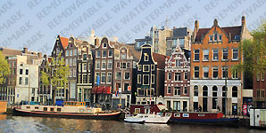

KERALA:
Best of Kerala Tour covers some of the highlighted cities like Cochin considered to be the “Gateway to Kerala”, Munnar a breathtaking landscape with Tea and spice plantation.Periyar abode for the wildlife lovers and of course Kumarakom for the backwaters cruise which is the centre of attraction for whosoever visiting this part of the country. An at last end your tour with beach destination Mararikulam.........
SOUTH INDIA ADVENTURE:
Southern India starts from south of Vindhya and Satpura ranges covering most of Deccan plateau and Eastern and Western Ghats. It is the area which encompasses the states of Andhra Pradesh, Karnataka, Tamilnadu and Kerala, also the union territories of Lakshadweep Islands and Pondicherry. South India is popular among travelers for its cultural heritages, temples and historical monuments. There are many exotic locations in South India which can mesmerize the visitors with its scenic views.......
GOLDEN TRIANGLE:
Why this tour is called Golden Triangle Tour? Three cities are involved, Delhi, Agra and Jaipur which are almost equidistant. This tour gives you a kaleidoscopic view of rich Indian history and culture for which it is known in many parts of the world. Delhi which is the mixture of modern and ancient times, Agra known as the city of Taj. Jaipur the town Rajputs (warriors). Each city has distinct features, the ramparts of Jaigarh and Amer fort speaks the valour........
NORTH:
North India is a region in the northern part of India. It includes the states Jammu and Kashmir, Haryana, Himachal Pradesh, Punjab, Uttar Pradesh and Uttarakhand. It also includes the Union Territory Chandigarh and Delhi. Delhi is the capital of the India. Chandigarh is the well planned city of the India......
GOA:
Goa is a state in western India with coastlines stretching along the Arabian Sea. Its long history as a Portuguese colony prior to 1961 is evident in its preserved 16th-century churches and the area’s tropical spice plantations. Goa is also known for its beaches, ranging from popular stretches at Baga and Palolem to laid-back fishing villages such as Agonda.......